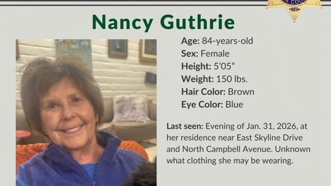

October 03, 2026
Luke Daley — Once Questioned in the Nancy Guthrie Case — Booked on Unrelated Weapons and Drug Charges


Booking photo: Pima County Sheriff's Office (via Fox News Digital); Nancy Guthrie flyer: Pima County Sheriff's Office; headline card: The Night Desk
Luke Daley's name is back in the headlines of the Nancy Guthrie case — and this time he's behind bars.
Daley, 37, was booked into the Pima County Adult Detention Center on Friday, October 2, on weapons and drug charges, according to official booking records first surfaced by TV Insider. Bond is listed at $22,500.
To be clear: the charges are unrelated to Nancy Guthrie's disappearance. Authorities have not named a suspect in the case — not during the February investigation, and not now.
Why this name matters
Eight months ago, Nancy Guthrie — 84 years old, and the mother of Today co-anchor Savannah Guthrie — was taken from her Catalina Foothills home on the evening of January 31. She has not been seen since.
On February 13, about two weeks after Nancy vanished, investigators detained and questioned Daley during a SWAT raid on his Tucson home. His mother, 77, with whom he lives, was also questioned. Daley's Range Rover was towed from outside a nearby Culver's restaurant, searched, and sealed with evidence tape.
Hours of questioning ended with both of them released — no charges filed.
Daley, a convicted felon with a prior drug record, later told True Crime Arizona that social-media speculation linking him to the case's "Porch Guy" — the masked man captured on Nancy's doorbell camera — was to blame.
"It's not me. I don't see the resemblance of it looking like me. Absolutely not. I have nothing to do with this case," Daley said. "Someone says something, and then they just go off of it based on no evidence, no truth."
His attorney echoed the denial, saying Daley had nothing to do with Nancy's abduction.
Where the case stands
- Nancy, 84, was last seen at her Catalina Foothills home on the evening of January 31 — eight months ago.
- Investigators released doorbell footage of a masked suspect on her front porch and published alleged ransom notes.
- A $1 million reward has been offered for information.
- No suspect has been officially named in the disappearance.
- The investigation remains active, with investigators continuing to examine physical evidence including glove details and DNA.
Daley's new booking revives the questions that have shadowed him since February — but as of now, it remains a separate case: a felon accused of carrying a gun and drugs, back in the system that once held him as a person of interest and let him go.
If you have information about Nancy Guthrie's disappearance, contact the Pima County Sheriff's Department or the FBI.
Source: TV Insider — read the original report
← Back to latest stories